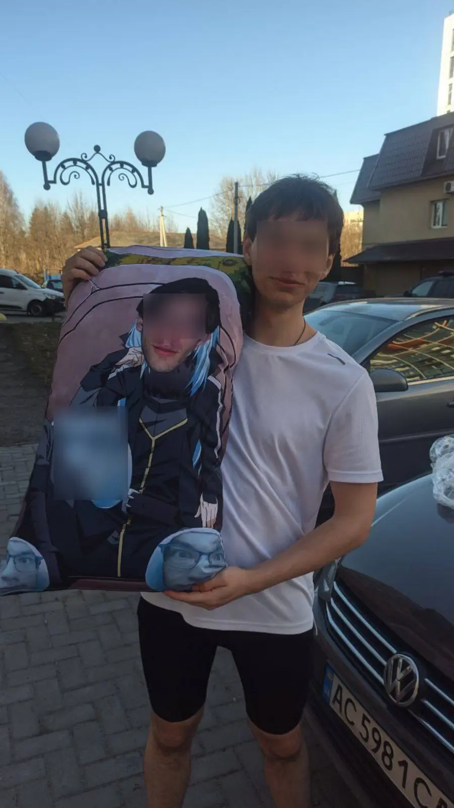
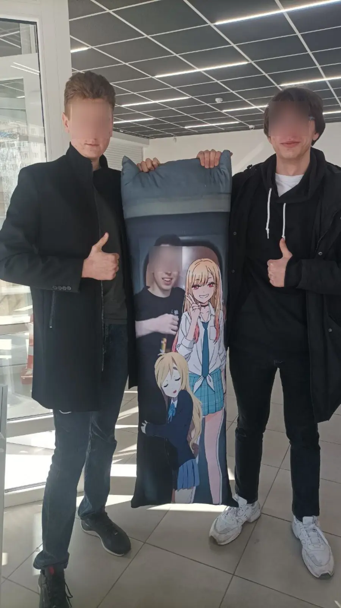

і для себе коханого...
Завантаж фото → Отримай готовий макет
Найкраще підходять зображення у повний зріст або від пояса. Час очікування: ~45–60 сек.


Найкраще підходять зображення у повний зріст або від пояса. Час очікування: ~30–90 сек.